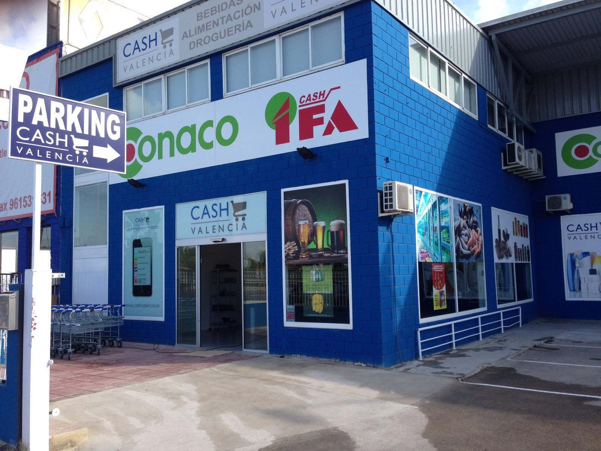
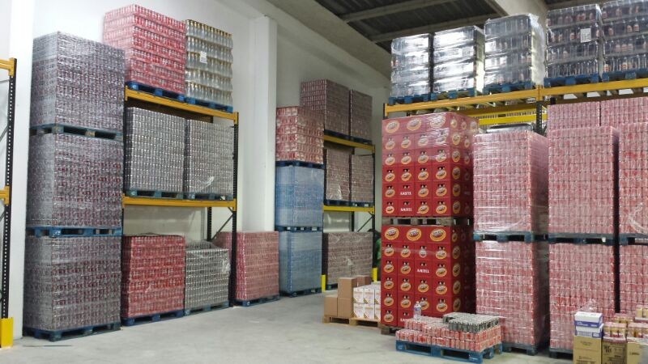

2006 — 2026
20 AÑOS
COMPARTIENDO CAMINO.
Dos décadas creciendo, aprendiendo, abriendo mercados y construyendo relaciones con clientes y proveedores dentro y fuera de España.
Dos décadas creciendo, aprendiendo, abriendo mercados y construyendo relaciones con clientes y proveedores dentro y fuera de España.
Rinfresco nació el 29 de septiembre de 2006. Durante estos años hemos ampliado categorías, mercados y relaciones comerciales, manteniendo una idea sencilla: trabajar con seriedad, cercanía y continuidad.
Algunas etapas, espacios y proyectos forman parte de la memoria de la empresa y ayudan a explicar cómo hemos llegado hasta aquí.

Una de las etapas y proyectos que también formaron parte del recorrido de Rinfresco.

Palés, cajas, producto y muchas horas de trabajo detrás de cada operación.
“Las buenas relaciones se construyen operación a operación, año tras año.”
Gracias por confiar, repetir, exigirnos y permitirnos crecer con vosotros. Cada relación duradera ha formado parte de la evolución de Rinfresco.
Gracias por acompañarnos, responder cuando hacía falta y ayudarnos a construir relaciones que han ido mucho más allá de una operación puntual.
Seguimos con la misma ambición de crecer, abrir oportunidades y construir relaciones comerciales duraderas.